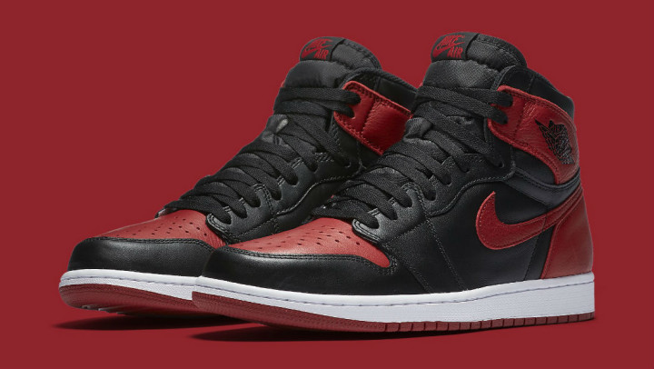

Jordan 1
Home
Nike
Jordan
Adidas
Favorites

Air Jordan 1 Retro High 'Bred/Banned'
STYLE:
COLORWAY:
RETAIL PRICE: $
RELEASE DATE:
2016 marks the first time in 3 years that the Air Jordan Retro 1 High OG "Bred" colorway returns. There seems to be Air Jordan 1 colorways released every year but none carry the prestige of the classic Chicago-inspired versions like the black and Varsity Red version commonly referred to as the "banned" Air Jordans. Jordan Brand reintroduced the "OG" versions of the Jordan 1, which featured "Nike Air" labeling on the tongue and on the insoles back in 2013. Jordan collectors often place a higher value on these tiny details because when the original Nike Air Jordan released in 1985, the Jumpman logo hadn't even been created, which means the retro AJ1s with the Jumpman on the tongue, heel or insole, are just not quite the same. Whether you call them Breds, Banned 1s, Black and Reds, Playoffs, or any other nickname, the Air Jordan 1 Retro in black and Varsity Red is arguably the most important Air Jordan release and should be a part of any serious collectors sneaker collection.
Save Changes
Add To Favorites